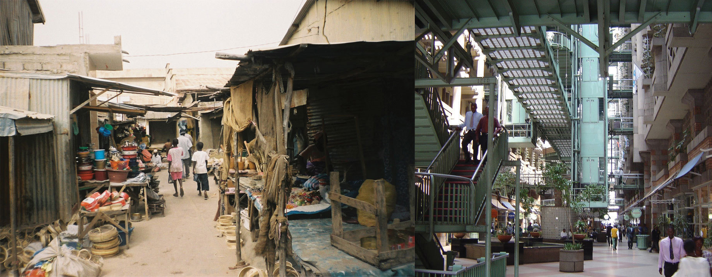
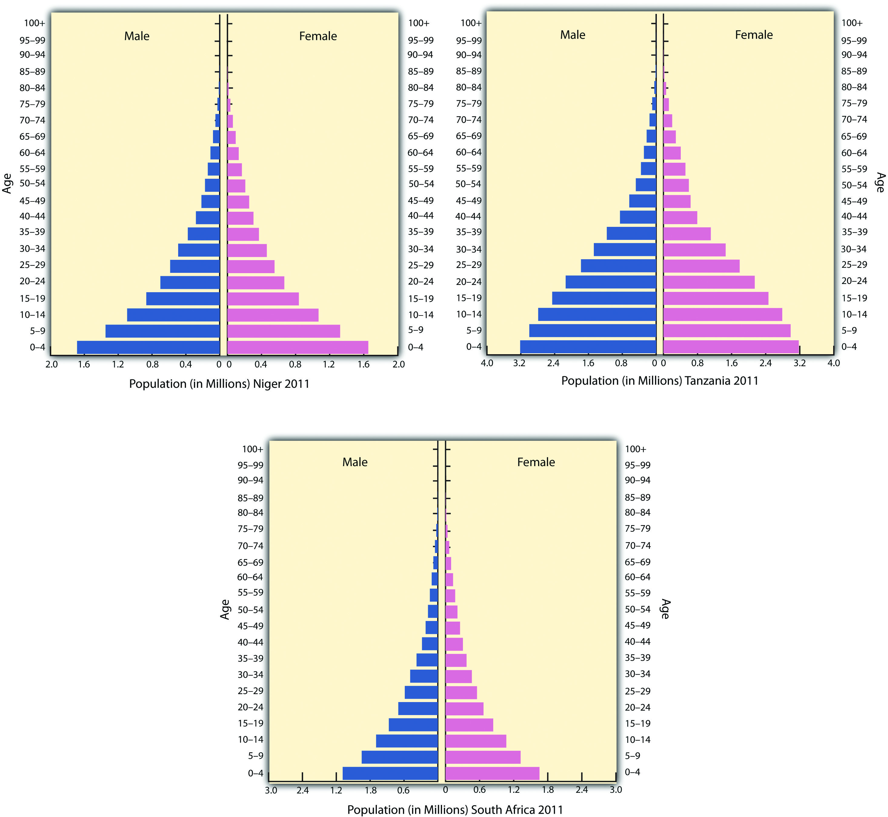
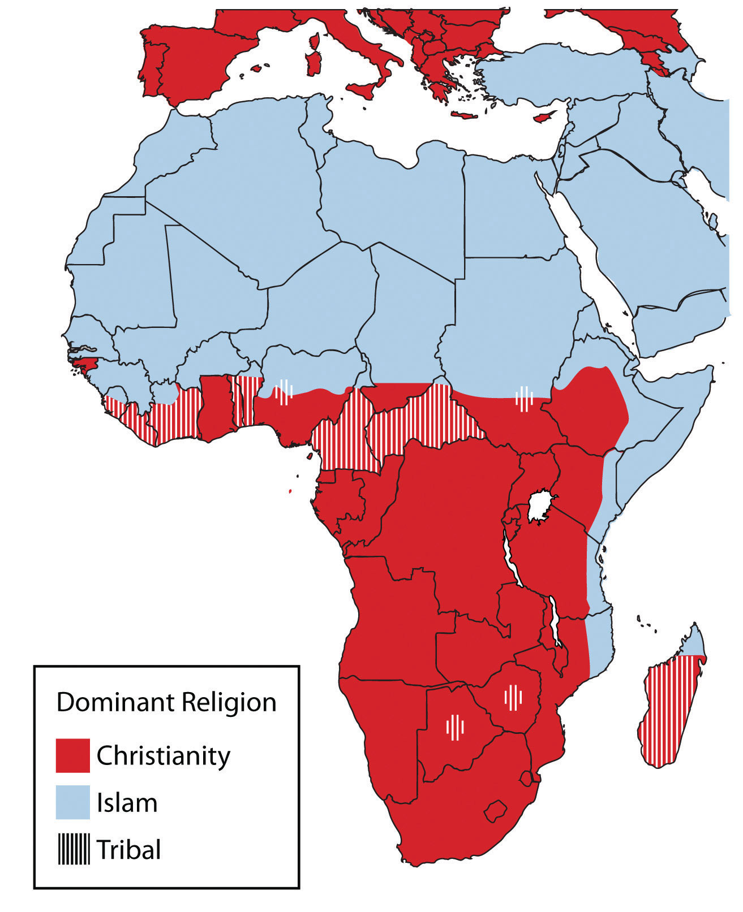
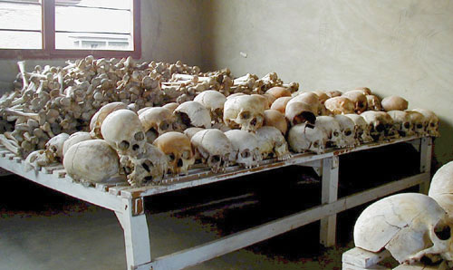
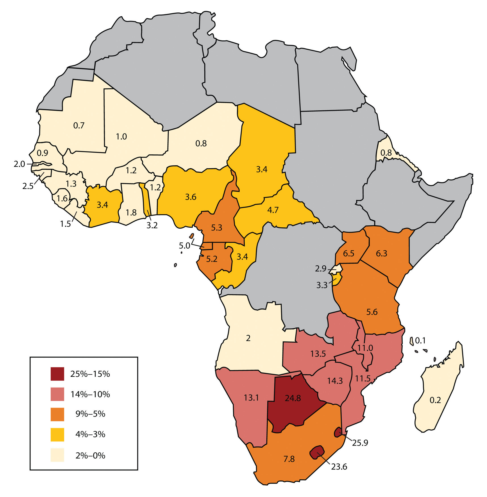
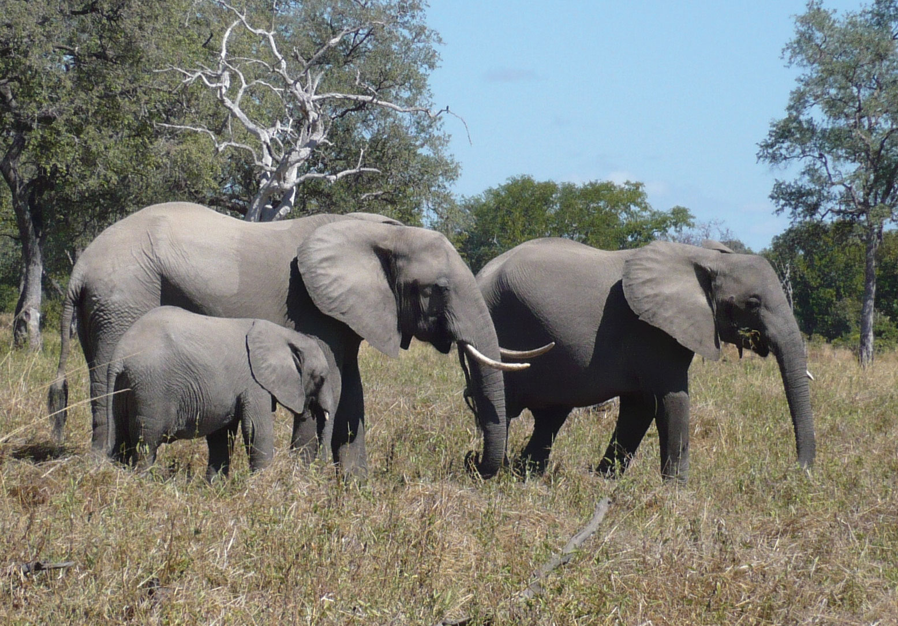

The demographic data for each country in each region of Subsaharan Africa indicate the region’s human geography. Urban percentages, family size, income levels, and the other data that can indicate the lifestyle or development level are acutely helpful in understanding the trends in Subsaharan Africa. The index of economic development illustrates the dynamics and conditions that exist in the realm. The data indicate the consistency of economic and development trends across Africa. The data does not, however, indicate differences in cultural dynamics and uniqueness in the ways that local people live. The interesting part of studying Subsaharan Africa is the many ethnic and cultural groups in each country that bring to the surface a wide array of global diversity in our human community. Within each and every country are microcosms of human societies that hold particular customs that may be thousands of years old. Globalization and technological advancements challenge every cultural group to adapt and innovate to make a living yet provide continuity in their heritage. The remote cultural groups of Subsaharan Africa are most susceptible to the volatile nature of globalization, which threatens their current way of life.
Subsaharan Africa is a peripheral world region with neocolonial economic patterns. Peripheral regions usually supply raw materials, food, and cheap labor to the core industrial countries. Most of the population in Subsaharan Africa works in subsistence agriculture to make a living and feed their families. Families are large. In recent decades, there has been enormous rural-to-urban migration to the major cities, which are extremely overcrowded. Subsaharan Africa has more than 750 million people, and most earn the US equivalent of only $1–3 per day.
There is no single major core economic area in Subsaharan Africa. This realm has many core cities and the rest is periphery. Many of the core cities are improving their technology and infrastructure and entering into the globalized economy. Even so, as much as 70 percent of the people still work in agriculture, leaving little time to develop a large educated group of professionals to assist with social services and administrative responsibilities. The realm depends heavily on outside support for technical and financial assistance. Computers, medical equipment, and other high-tech goods are all imported. African states have formed trade agreements and have joined the African Union to assist each other in economic development and trade.
Figure 7.10 Informal and Formal Sectors
The photo on the left is of side-street vendors in Senegal, who might contribute to the informal market system that is prevalent in many Subsaharan African countries. Cash and bartering are the main methods of payment. The photo on the right is of a shopping mall in Zimbabwe, which is part of the formal market system that is regulated and taxed by the government.
Sources: Photo on the left courtesy of Radoslaw Botev, http://commons.wikimedia.org/wiki/File:Market_Kaolack.jpg. Photo on the right courtesy of Gary Bembridge, http://www.flickr.com/photos/tipsfortravellers/557269907.
Subsaharan Africa has nearly forty urban areas of more than one million people. At the center of the central business districts (CBDs) are modern high-rise business offices well connected to the global economy. Outside the CBD are slums with no services and miserable, unsanitary conditions. The informal sectorEconomic activity that is not regulated, controlled, or taxed by the government. of the economy—that which is not regulated, controlled, or taxed—has become the primary system of doing business in most of the cities. The informal sector comprises trading, street markets, and any other business without financial records for cash transactions.
The lack of government regulation and control prevents taxes from being assessed or collected, which in turn diminishes support for public services or infrastructure. The formal sectorEconomic activity that is regulated, controlled, or taxed by the government. of the economy—that which the government can regulate, control, and tax—is forced to foot the bill to operate the government and support public services such as education, security, and transportation. In spite of the misery and unhealthy conditions of the slums where millions of people already live, more migrants from the countryside continue to shift to the city in search of jobs and opportunities. African cities are growing rapidly, many without organized planning.
If the index of economic development were applied to Subsaharan Africa, a clear pattern would emerge. Rural areas would be in the lower stages of development, and only a few developing areas would be higher than stage 3. A large percentage of this realm would be in stage 1 or 2 of this model. Countries with higher standards of living, such as South Africa or Botswana, would be working through stage 3 or 4. This region has one of the fastest-growing populations of the world and economically lags behind countries in the Northern Hemisphere, which have transitioned into the higher stages of the index of economic development.
The socioeconomic data illustrate well the conditions for people in Africa in comparison to the rest of the world. African countries are at the lowest end of the statistics for development prospects. The larger cities are showing promise for advancement into the higher stages of development. Family sizes in the rural countries are some of the largest in the world. The average fertility rate for much of Africa is about 5; in Mali and Niger, the rate is higher than 7. One-third to half of the populations of these countries are under the age of fifteen. Children make up most of the population in many areas—an indication that heavier burdens are placed on women, meaning that women are not easily able to get an education or work outside the home.
The populations of West African countries are increasing rapidly and will double in about thirty years at the current rate. This trend places an extra burden on the economy and on the environment. It is fueling one of the fastest rural-to-urban shifts in the world. West Africa is now only about 32 percent urban, and Burkina Faso and Niger are less than 20 percent urban—clear indications that agriculture is the largest sector of their economies and that most of the people live in rural areas or small villages. Personal income levels in West African countries are among the lowest in the world; as far as standard of living is concerned, these are poor countries. Few economic opportunities exist for the millions of young people entering the employment market.
The United Nations (UN) human development index lists all but two of West African countries in the lowest category of development. Sierra Leone is the lowest of the world. Ghana and Senegal were the two countries listed in the medium range. Senegal is the lowest country in the medium category, just barely rising about the lowest tier. A country listed in the lowest tier of the medium category translates into a region with low availability of opportunities and advantages for its people. As a peripheral world region, the economic base is structured around agriculture with supportive extractive activities. Agricultural activities are renewable, but agricultural profit margins are slim. These countries are in a subsistence mode with a rapidly expanding population and few industrial or postindustrial activities to gain income.
No Subsaharan African nation is in stage 5 of the index of economic development. Nevertheless, the fact that they are not consumer societies does not negate the rich cultural values and heritage of the realm. The energy of the people does not revolve around consumerism but is instead focused on the people themselves. High levels of social interaction and community involvement bring about different cultural standards than those of a consumer society, which focuses more on the individual and less on community. Unless there is social unrest or open warfare, which does exist in various places, the people work hard to bring about a civil society based on family and tradition.
Figure 7.12 Population Pyramids of African Countries
The population pyramids of Niger, Tanzania, and South Africa illustrate the population growth dynamics of Subsaharan Africa. Niger’s population pyramid illustrates large family size and rapid population growth. Tanzania’s pyramid is similar but shows signs of slowing population growth. South Africa, which is more urbanized and industrialized, shows signs of declining family sizes and fewer children.
Source: Data courtesy of US Census Bureau International Programs.
Subsaharan Africa covers a large land area more than 2.3 times the size of the United States. Thousands of ethnic groups are scattered throughout the realm. There is immense diversity within the 750 million people in Subsaharan Africa, and within each country are cultural and ethnic groups with their own history, language, and religion. More than two thousand separate and distinct languages are spoken in all of Africa. Forty are spoken by more than a million people. Many local languages are not written down and have no historical record or dictionary. Local languages without a written history are usually the first to be lost as globalization affects the realm. Nigeria, with more than 130 million people, is the most populous country in Africa. It is about the size of Texas and Oklahoma combined, and the African Transition Zone cuts through the country’s northern portion. More than five hundred separate languages are spoken in Nigeria alone. Three of the six dominant languages in Subsaharan Africa—spoken by at least ten million people or more—are spoken in Nigeria: Hausa, Yoruba, and Ibo. The three remaining major languages of Subsaharan Africa are Swahili, Lingala, and Zulu.
Colonial activity changed much of how the African countries operated economically, socially, and politically. Language is one aspect of culture that indicates a colonial relationship. Many African countries today speak a European language as the official language. Mauritania is the only country that has Arabic as its official language. Nigeria has English plus other local languages. The official languages of most of West Africa are either French or English, and Guinea-Bissau’s official language is Portuguese.
This vestige of colonial power would seem inconsistent with the desire to be free of foreign domination. However, because often dozens to hundreds of local languages are spoken within the country, choosing the colonial language as the official language produces less of an advantage for one group wishing to dominate the political arena with its own local language and heritage.
For example, a language problem arises when a government needs to print material for the country. What language do they use? In Nigeria, there would be more than five hundred possible languages. What if the leadership used a language only spoken by a few people? The language of those in power would provide an advantage over those that could not understand it. What if there were more than five hundred separate languages in Texas and Oklahoma? How would they function? This is why many African countries have chosen a colonial language as their country’s lingua franca, or national language. Ghana, which is the size of Minnesota, has more than eighty spoken languages. Ghana and Nigeria have both chosen English as their national language to provide a cohesive and inclusive method of addressing the language dilemma.
A portion of the two thousand languages spoken on the African continent will not survive. A large number of the languages are spoken by a small number of local groups that may or may not have a written text or alphabet. The influence of globalization causes the country’s lingua franca to overshadow local languages, which are relegated to the older generations that may not be fluent in the languages of global business and commerce. Young people often learn the lingua franca and may or may not pass their local language on to the next generation. This is how languages become extinct. Similar dynamics can be applied to local religious beliefs. Outside influence can often erode local beliefs and cause an evolution of religious tenets that eventually transform indigenous beliefs into patterns similar to the larger, more mainstream religions.
Figure 7.13 Language Families of Africa

There are six main language families with many variations of each. It is estimated that more than two thousand languages are spoken in all Africa.
Source: Map courtesy of Mark Dingemanse and Pmx, http://commons.wikimedia.org/wiki/File:African_language_families_en.svg.
Before the monotheistic religions from the Middle East were even in existence, the people of Africa followed traditional animist beliefs. The diffusion of Christianity and Islam to the African continent convinced many African people to abandon their animist beliefs. African religions spread with the slave trade and became a part of the African DiasporaThe disbursement of people with an African heritage to other parts of the world mainly through the slave trade.. Examples can be found in the Santeria religion in Cuba, Umbanda followers in Brazil, and Vodou (Voodoo) practitioners in Haiti. Many of these examples indicate a high rate of mixing between traditional religions and Christianity, something that is not as well accepted within Islam.
The current religious trends in Africa follow the pattern of the African Transition Zone. Most of the population north of the zone follows Islam, and most of the population living south of the zone follows Christianity. Large percentages of people in the region follow a wide array of traditional or animist beliefs. For example, as of 2010, more than 50 percent of the people of Togo still followed local religions not affiliated with Christianity or Islam. Only about 29 percent of the population claimed to be Christian, and even fewer claimed to follow Islam.“The World Factbook,” Central Intelligence Agency, https://www.cia.gov/library/publications/the-world-factbook/geos/to.html.
Along the African Transition Zone, followers of one religion will clash with followers of the other. Countries such as Nigeria have a history of this type of social division, and Nigeria’s government allows Islamic Sharia law to take precedence over civil law in the country’s northern regions. For example, in 2002, the Miss World beauty pageant was to be held in Nigeria’s capital. At the same time, Nigerian news reported a case of a young woman charged with adultery in Muslim-dominated northern Nigeria. The woman was to be stoned to death for her crime. Northern Nigeria is north of the transition zone and is staunchly Islamic. Southern Nigeria is mainly Christian or animist. The northern Muslims were protesting the “decadent” Miss World beauty pageant, and riots spilled over into the streets. Buildings were burned, cars were overturned, and more than one hundred people were killed. Meanwhile, people in the south were protesting the death sentence of the woman charged with adultery. Contestants for the Miss World contest began to pull out of the competition, some in protest and some for personal safety reasons. In the end, the woman sentenced to death was smuggled out of northern Nigeria to the safety of the south. The Miss World contest was moved to London.
Both Islam and Christianity have been on the rise in Africa. As the local beliefs are replaced with monotheistic religions, there is more integration with either the West (Europe and America) or the Middle East. Religious activity through Christian missionaries or the advancement of Islam sometimes coincides with economic support being brought in through the same channels, which is often welcome and enhances the global relationships that occur.
However, Africa is still full of traditional religions with rich spiritual histories. Spiritual forces are found in the environment. Deities of all kinds are worshipped throughout Africa. Christianity and Islam are latecomers to the region but have made deep inroads into the African culture. Both compete for the souls of the African people.
Figure 7.14 Dominant Religions in Africa
Islam is prominent north of the African Transition Zone, and Christianity is more prominent south of the African Transition Zone.
Source: Updated from map courtesy of Andreas 06, http://commons.wikimedia.org/wiki/File:Blank_Map-Africa.svg.
Subsaharan Africa is home to thousands of ethnic or traditional groups. Each has a separate identity and history, and often one group is in conflict with another. The slave trade and the establishment of colonial political boundaries or policies exacerbated historical ethnic hostilities. Major civil wars have been fought throughout the history of throughout Subsaharan Africa and continue at the present time. Central Africa has endured ongoing brutal conflict in the past decade, with no solution in sight. More than five million people have died as a result of the civil war in The Congo (Zaire). Fighting continues between various factions over political control or control over natural resources, such as diamonds or gold. Civil wars are devastating some African countries. Many other countries, such as Zimbabwe, Chad, and the Central African Republic, have also suffered economic disintegration as a result of severe political unrest.
Rwanda’s Tutsi-Hutu conflict has been historic in its violence and in the senseless killing of innocent people. In 1994, the centuries-old conflict erupted into violence of unprecedented proportions. Hutu militias took revenge on the Tutsis for years of suppression and massacred anyone who did not support the Hutu cause. Tutsi rebels finally gained strength, fought back, and defeated the Hutu militias. More than a million people were killed, and more than a million defeated Hutus fled as refugees to neighboring countries, where many died of cholera and dysentery in refugee camps.
Figure 7.15 Tragedy in Rwanda
The bones of victims killed in the Rwandan genocide are kept in this school in Rwanda. The total number of people killed in the war is unknown.
Source: Photo courtesy of United States Congress, http://commons.wikimedia.org/wiki/File:Rwandan_Genocide_Murambi_skulls.jpg.
The civil war in Rwanda and the many refugees it created destabilized the entire Central African region. The shift in population and the increase in military arms along the Zairian border resulted in an extensive civil war in The Congo (Zaire) that has resulted in the deaths of more than five million people, many by disease or starvation. Over three million deaths are estimated to have been related directly to the war and another two million by the harsh conditions in the region.“Crisis Caused 5.4 Million Deaths in Congo, Report Says,” AmericanRenaissance.com, http://www.amren.com/mtnews/archives/2008/01/crisis_caused_5.php; “DR Congo War Deaths ‘Exaggerated,’” BBC, http://news.bbc.co.uk/2/hi/africa/8471147.stm. The civil wars in The Congo from 1996 to 2003 changed the cultural and political landscapes and destroyed valuable infrastructure. One of the driving forces in these wars is the control of valuable mineral resources found in the Great Rift Valley along the eastern boundary of The Congo. Diamonds, gold, copper, zinc, and other minerals are abundant in this region, and wealth that can be gained from the mining of these products attracts political forces to compete for their control.
Civil wars have wreaked havoc on the countries of Angola, Sierra Leone, Liberia, and Somalia. All have experienced some amount of serious conflicts in the past decade. Many of the civil wars are not reported by the news media worldwide, even though the number of people affected, injured, and killed is deplorable. In places such as Ivory Coast, Nigeria, and Zimbabwe, the streets have become a battleground.
Creating stability in parts of Africa has been challenging, as civil unrest and political corruption continue in many African countries. The core industrialized countries have been hesitant to step in or invest in the peace and stability of Africa. Governments of more than a few African countries have been unable to bring stability or to provide for their people. For example, Somalia has no central government; rather, it is ruled by warlords and village chiefs. Corruption, dictatorial rule, and military force have been major components of government rule in these cases.
As if Subsaharan Africa did not have enough to work through to achieve stability, it must also cope with high numbers of people infected with HIV and AIDS. From South Africa to Kenya, there is a line of countries with some of the highest percentages of HIV-infected people in the world. The HIV virus has infected more than 24 percent of adults in Botswana, and some villages have lost an entire generation of adults to AIDS. The AIDS pandemic has become a major health crisis for Subsaharan Africa. According to the World Health Organization, as many as thirty million people in this realm are HIV-infected.
It’s possible to live with HIV for years before dying of AIDS. HIV-infected individuals can pass the virus to others without knowing they have it, and millions of people die of AIDS in Subsaharan Africa without ever knowing they were infected. The lack of education, HIV testing, and medical services hinder progress toward stopping this deadly disease. Prevention is an ideal that has not materialized yet. Many people do not want to be tested out of fear of rejection by their families and friends if they are infected. AIDS will surely kill millions more in Africa before a solution is found.
Many other diseases are common in Subsaharan Africa. Some are spread by vectors in the environment. Mosquitoes spread illnesses such as malaria and yellow fever, which are common throughout the realm. Sleeping sickness is spread by the tsetse fly, which can also infect cattle and livestock. Hepatitis is widespread. Schistosomiasis, tuberculosis, and typhoid are also common. Unsanitary conditions and polluted water are breeding grounds for microbes that cause diseases. People living in less-than-sanitary conditions are more likely to come in contact with and become infected with these diseases and are also less likely to obtain medical attention at an early stage of the disease.
Figure 7.16 HIV and AIDS
This map shows the estimated percentage of adults with HIV in Subsaharan Africa for each state based on best estimates by the World Health Organization and the UN.
Updated from map courtesy of Andreas 06, http://commons.wikimedia.org/wiki/File:Blank_Map-Africa.svg. Data courtesy of UNAIDS 2010 Global Report, http://www.unaids.org/documents/20101123_GlobalReport_Annexes1_em.pdf.
Subsaharan Africa has great potential for the development of tourism. Tourism is considered a postindustrial activity with mixed income opportunities. If Africa can manage its resources and provide a safe environment for travelers, tourism will have a strong impact on Africa’s economic growth and will play a significant role in its future.
Tourism is a growing sector of the global economy. Travel and tourism jobs are increasing worldwide. Africa as a whole attracts less than 5 percent of total world tourists and accounts for only a small percentage of international tourism income. Given the region’s slim share of the tourism market and the expected dynamic growth of the sector worldwide, Africa can expect to substantially increase its share of global tourism activity.
Subsaharan Africa has a strong supply-side potential to attract tourists. Beach resorts alone create a large draw for tourists. The coastal waters of the Indian Ocean boast some of the finest beaches in the world, with plenty of opportunities for sailing, diving, or other water sports. South Africa is proud of its secluded beaches and beautiful coastline. Other well-known coastal tourist destinations include Zanzibar-Tanzania, Benguerra Island in Mozambique, and the Seychelles. Other areas with tourism potential are the wildlife parks and game preserves. Cultural locations with a rich heritage of historical significance are growing in their attractiveness to and accessibility for world travelers.
Africa excels in attracting tourists to its wildlife and game reserves. Safari tourism highlights exotic creatures, including elephants, lions, rhinos, hippos, and big game. Africa is full of extensive game reserves and national parks. The following are some of the most visited animal safari destinations (* indicates a UNESCO World Heritage Site):
Subsaharan Africa is replete with natural features or attractions that tourists gravitate toward, particularly tourists who are in search of outstanding scenic sites or desire an environmental adventure. There are dozens of awe-inspiring national parks throughout Africa. The following are some of the more interesting physical geography locations in Subsaharan Africa (* indicates a UNESCO World Heritage Site):
Cultural and heritage tourism has grown immensely in recent years. Cultural assets and heritage landscapes have always provided for excellent tourist attractions. Subsaharan Africa has a great wealth of culture and heritage to attract tourists. The following are a few of the most well-known cultural destinations in the realm (* indicates a UNESCO World Heritage Site):
Figure 7.17 African Elephants
Wildlife and big game are natural resources for tourism. Countries in Subsaharan Africa have created many protected areas for wildlife.
Source: Photo courtesy of Bryce Sitter.
Every African country, urban center, or rural village is its own unique tourism magnet. The tourism business, however, is broader than just the sites themselves. Considerations need to be made for transportation to and from the country and final destination. Hotels and guest accommodations, such as food services, restaurants, and the availability of other types of consumer goods, need to be considered. Services need to be available that link the various components of a trip, such as guide services in national parks or city bus tours. The attractiveness and competitiveness of each tourism destination will depend on the site’s quality and accessibility.
A serious financial investment is needed to bring Subsaharan Africa up to par with the global marketplace. Africa has huge potential for growth in its tourism market. Unfortunately, the same problems with tourism that were discussed in the lesson on tourism in the Caribbean (Chapter 5 "Middle America", Section 5.4 "The Caribbean") can be applied to Africa. There are many positive and negative aspects to tourism, and a trade-off is usually needed. Heavy tourism traffic might have a negative impact on the environment, cultural stereotypes tend to be exploited, and the disparity between wealthy tourists and service workers earning a modest wage may lend itself to divisions and social friction.
Tourism demands higher levels of security and public health at all levels. Money spent on tourism development is money not spent on schools or clinics. On the other hand, without the tourism income, there are no jobs. Tourism brings to the surface both centrifugal and centripetal cultural forces. To be successful, Africa will need to balance out the economic need for tourism with its willingness to comply with the requirements of the tourism industry.